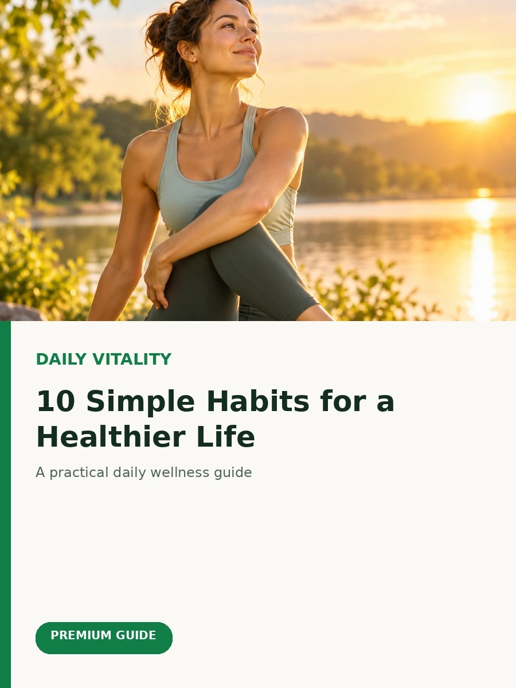

- Delay your phone for the first 10 minutes of the day
- Get natural light early to reset your body clock
- Hydrate before caffeine and move for just 5 minutes
Mornings set the tone for everything that follows. You don't need an elaborate routine — just a few small, consistent habits that give your mind a calm starting point before the day gets busy.
1. Don't check your phone for the first 10 minutes
Notifications and news put your mind into reactive mode before you've had a chance to think for yourself. Give yourself ten quiet minutes first.
2. Get natural light early
A few minutes near a window or outside helps regulate your body's internal clock, which improves mood and energy for the rest of the day.

3. Drink water before coffee
You wake up mildly dehydrated after hours of sleep. A glass of water before caffeine helps your body and brain wake up properly.
4. Move for five minutes
You don't need a full workout — stretching, a short walk, or a few minutes of movement is enough to shift your body out of "sleep mode."


5. Set one intention, not a whole to-do list
Instead of mentally listing everything you need to do, pick the one thing that matters most today. It keeps your morning calm instead of overwhelming.
None of these require extra time or money — just a small shift in what you do first. Try one this week and notice the difference.
This article is for general educational purposes and is not a substitute for professional medical advice.
Frequently Asked Questions
How long does it take to build a morning routine?
Most people notice habits starting to feel automatic after 3–4 consistent weeks, though it varies by person.
Is it bad to check your phone first thing?
It's not inherently harmful, but it primes your brain to react to others' priorities before setting your own.
What if I don't have five minutes to move?
Even one minute of stretching while the kettle boils is enough to signal your body it's time to wake up.
📰 Related Articles



Bone Strength Blueprint
A practical, science-based guide to building and protecting strong bones for life.
Download Now →